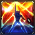

Mû du Bélier
Mû du Bélier est un des 88 Chevaliers d'Athéna connus comme les Chevaliers qui protègent leur Déesse à travers les différentes générations. Mû est également l'un des 12 Chevaliers d'Or qui est protégé par la constellation du Bélier, et porte donc cette Armure.
Personnalité
Il était proche d'Aldébaran. Mû est de nature calme et très douce prêt à protéger Athéna. Il se soucie également des autres comme il l'a montré avec Shiryu et Shaka. Cependant, il peut mettre sa douceur de côté pour devenir un redoutable combattant qui protège sa maison. Il a de longs cheveux lavandes et possède deux marques sur le front comme Kiki , Raki , Yuzuriha , Hakurei, sage et Shion. Il lui arrive d'attacher ses cheveux , il a les yeux bleus turquoise, et a le tient plutôt clair. La première fois qu'on le voit dans les montagnes de Jamir on peut remarquer qu'il est habillé avec les tenues traditionnelles de son pays , un long tee shirt jaune clair au manche courte, un pantalon vert qui arrive en bas des chevilles , des chaussures d'un vert plus foncé avec orné de bandes qui arrive en au des chevilles, une écharpe rouge bordeaux couvre ses épaules et des bandes recouvre ses poignées.
Pouvoir principal
Extinction stellaire
